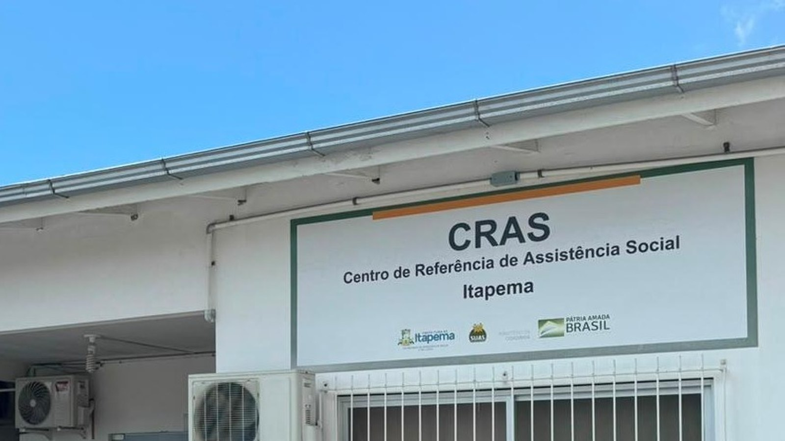

Itapema · Serviço
Itapema · ServiçoCadastro das 90 casas do Minha Casa, Minha Vida em Itapema passa a atender no fim de semana
Como funciona a inscrição do Residencial Campo Verde e o que ela exige.
O atendimento de Cadastro Único voltado à habitação é neste sábado, 19, no CRAS Morretes, na Rua 434, nº 1.000. O aviso da Prefeitura de Itapema, publicado na quinta-feira, marca das 8h às 12h e das 13h às 17h, com 45 senhas pela manhã e 45 à tarde. Comparando com o aviso de 2 de setembro, que já tinha marcado essa mesma data, o expediente cresceu uma hora em cada turno e o número de senhas ficou igual. Sem o CadÚnico em dia não dá para disputar as 90 casas do Residencial Campo Verde, e o prazo fecha em 13 de outubro.
Em 30 segundos · Modo de Leitura, formato original Santa Informa
É neste sábado, 19, em Itapema.
Atendimento de Cadastro Único.
Voltado para quem quer casa popular.
Local: CRAS Morretes.
Endereço: Rua 434, nº 1.000.
Horário: 8h às 12h.
E de novo das 13h às 17h.
O aviso anterior dizia 8h às 11h.
E 13h às 16h, na mesma data.
Ou seja: uma hora a mais por turno.
São 45 senhas de manhã.
E 45 senhas à tarde.
Esse número não mudou.
O atendimento é por ordem de chegada.
Repete no sábado 26.
É para renda de até R$ 3.200.
Leve documento original de todo mundo da casa.
O CadÚnico é obrigatório na Faixa 1.
Sem ele, a inscrição não fecha.
São 90 casas no Residencial Campo Verde.
Fica no Sertão do Trombudo.
Cada uma tem 52 m² e dois quartos.
O prazo acaba em 13 de outubro.
Mas o CRAS é só uma etapa.
A inscrição da casa é no SISHAB.
A Prefeitura não explicou a troca de horário.
Poder PúblicoPublicada em Redação Santa Informa

O atendimento de Cadastro Único voltado à habitação acontece neste sábado, 19, no CRAS Morretes, em Itapema, na Rua 434, nº 1.000. O horário publicado pela Secretaria de Assistência Social é das 8h às 12h e das 13h às 17h, por ordem de chegada. São 45 senhas entregues a partir das 8h e outras 45 a partir das 13h. A mesma ação se repete no sábado seguinte, dia 26. O aviso saiu na quinta-feira, 17, e vale para famílias da Faixa 1, com renda bruta de até R$ 3.200 por mês. E o horário mudou: o aviso de 2 de setembro, que marcou essas mesmas datas, trazia das 8h às 11h e das 13h às 16h, uma hora a menos em cada turno.
São duas horas a mais de balcão no mesmo dia. O que ficou igual foi a quantidade de senhas, 45 de manhã e 45 à tarde. Na prática, as mesmas 90 famílias do dia passam a ter mais tempo de atendimento, e quem pega senha para a tarde corre menos risco de ser mandado de volta porque o expediente terminou. A Prefeitura não explicou a mudança em nenhum dos dois textos.
O Cadastro Único é obrigatório para quem quer disputar as 90 casas do Residencial Campo Verde, no Sertão do Trombudo. São casas de 52 metros quadrados, com dois quartos, da Faixa 1 do Minha Casa, Minha Vida. Quem está sem cadastro, ou com o cadastro desatualizado, não consegue completar a inscrição. E o calendário aperta: o Cadastro Habitacional abriu em 13 de agosto e fecha em 13 de outubro. Restam menos de quatro semanas, e só mais dois sábados de atendimento marcados.
O balcão do CRAS serve só para fazer ou atualizar o CadÚnico. A inscrição para as casas é outro passo, feito pelo SISHAB, o Sistema de Inscrição Habitacional que fica no site da Prefeitura, ou na Secretaria de Desenvolvimento Econômico e Habitação. Quem atualiza o cadastro e para por aí fica de fora da seleção. A classificação também não sai por ordem de chegada: as famílias habilitadas são pontuadas por critérios como mulher responsável pela família, presença de criança, adolescente, idoso ou pessoa com deficiência, caso de câncer ou doença rara na casa, mulher vítima de violência doméstica e moradia em área de risco.
A Assistência Social pede documentos originais de todos os moradores da casa: documento com foto em bom estado, título de eleitor dos adultos, certidão de nascimento ou casamento de todo mundo, Carteira de Trabalho Digital impressa e a última folha de pagamento para quem tem carteira assinada, comprovante de residência atualizado e atestado recente de frequência escolar ou matrícula das crianças. Faltando papel, o atendimento não se completa e a família volta outro dia.
O resumo de 30 segundos está no topo e a versão completa é o texto acima. Aqui ficam as três leituras da casa sobre o mesmo assunto.
Clara, a otimista
Duas horas a mais de atendimento no mesmo dia é notícia boa para quem já tentou resolver papel de manhã e viu o relógio ganhar a corrida. Sábado das 8h às 17h, com intervalo, dá fôlego para família que trabalha a semana inteira e só tem esse dia livre.
E tem outro detalhe bonito nessa história. O atendimento nasceu porque a procura subiu, segundo a própria coordenação do CadÚnico. Procura subindo quer dizer que a notícia das 90 casas chegou na casa das pessoas certas, que é exatamente o que um programa habitacional precisa que aconteça.
Seu Prudêncio, o criterioso
Merece atenção o jeito como a mudança apareceu. O horário de um serviço público saiu publicado de um jeito no dia 2 e de outro no dia 17, para a mesma data, sem uma linha dizendo que houve correção. Quem leu o primeiro aviso e anotou "até as 11h" na geladeira não tem como saber que agora vai até meio-dia.
Vale acompanhar também a conta das senhas. O expediente cresceu duas horas no dia e a oferta continuou em 90 senhas. Se a procura aumentou, como diz a Secretaria, mais tempo de balcão sem mais senha significa atendimento mais calmo para quem entra, e não vaga a mais para quem ficou na calçada.
Uma sugestão útil: publicar, depois de cada sábado, quantas senhas foram usadas e quantas pessoas ficaram sem. É um número que a equipe já tem na mão e que responderia sozinho se o desenho está no tamanho certo, ainda mais com o prazo das casas fechando em 13 de outubro.
Dito isso, o movimento é na direção certa. Abrir sábado para quem trabalha na semana, com 90 senhas e lista de documentos publicada antes, é organização que respeita o tempo de quem precisa do serviço. O que falta é o acompanhamento do resultado, não a intenção.
Caco, o sarcástico
O horário do atendimento fez a coisa mais rara do serviço público brasileiro: cresceu sozinho, no silêncio, sem inauguração e sem faixa. Acordei hoje e o sábado tinha duas horas a mais do que na semana passada.
Também reparei que as senhas ficaram as mesmas 90. Ou seja, a fila vai andar com mais calma, o que é ótimo para quem está dentro dela e irrelevante para quem está atrás do último da fila.
Agora, falando sério: sábado inteiro aberto, lista de documentos publicada com antecedência e o endereço na nota. Se todo aviso de serviço fosse assim, eu teria muito menos assunto e a cidade teria muito menos ligação para a Prefeitura. Topo o negócio.
Fontes: as datas de 19 e 26 de setembro, o horário das 8h às 12h e das 13h às 17h, as 45 senhas por turno, o endereço do CRAS Morretes, o teto de renda de R$ 3.200, a lista de documentos, a fala da coordenadora do Cadastro Único Adriana Dalmolin e a separação entre CadÚnico e SISHAB estão no aviso CRAS Morretes terá atendimentos do CadÚnico voltados à Habitação, publicado pela Prefeitura de Itapema em 17 de setembro de 2026, de onde também vem a foto desta matéria. O horário anterior, das 8h às 11h e das 13h às 16h, para as mesmas datas de 19 e 26, está no aviso Assistência Social realiza novos atendimentos para Cadastro Único voltado à Habitação em setembro, de 2 de setembro de 2026. A comparação entre os dois textos é nossa. O prazo de 13 de outubro, a abertura em 13 de agosto, as 90 casas de 52 metros quadrados do Residencial Campo Verde, o uso do SISHAB e os critérios de pontuação estão em Inscrições para 90 casas do Minha Casa, Minha Vida seguem até 13 de outubro, de 14 de setembro de 2026. O histórico do atendimento de fim de semana está na nossa matéria de 2 de setembro sobre o cadastro das 90 casas.
Itapema · ServiçoComo funciona a inscrição do Residencial Campo Verde e o que ela exige.
 Itapema · Serviço
Itapema · ServiçoO primeiro mutirão do ano no CRAS Morretes, em agosto.
 Itapema · Habitação
Itapema · HabitaçãoO outro programa de moradia da cidade, bem maior que as 90 casas.